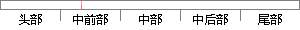

本章主要简单介绍了ARM的体系结构，比如ARM的工作状态、工作模式、寄存器和异常处理。
片段位置图

相似结果
相似片段：嵌入式系统及删体系结构本章主要会绍了嵌入式系统的...具体介绍了ARM处理器的工作模式、异常处理和工作状态...驱动程序的不同的硬件设备,比如有两个软盘,就可以...
| 标题 | 《基于嵌入式系统的应用程序设计研究》 |
| 对比库 | 中国学位论文全文数据库 |
| 作者 | 郑红 |
| 机构 | 西安电子科技大学 |
| 分类 | 计算机应用技术 |
| 年份 | 2007 |
| 相似率 | 68.57% （轻度抄袭） |
※ 片段修改建议 ※
近似词参考：- 主要：首要 重要
- 处理：处置 处置惩罚
- 比如：好比 譬如
- 异常：非常 异样
- 状态：状况
- 工作：事情
- 介绍：先容 一壁
- 简单：简略 简朴
系统自动生成语句： 本章首要简略先容了ARM的体系结构，好比ARM的事情状况、事情模式、寄存器和非常处置。
注：本片段修改建议为系统自动生成，仅供参考。